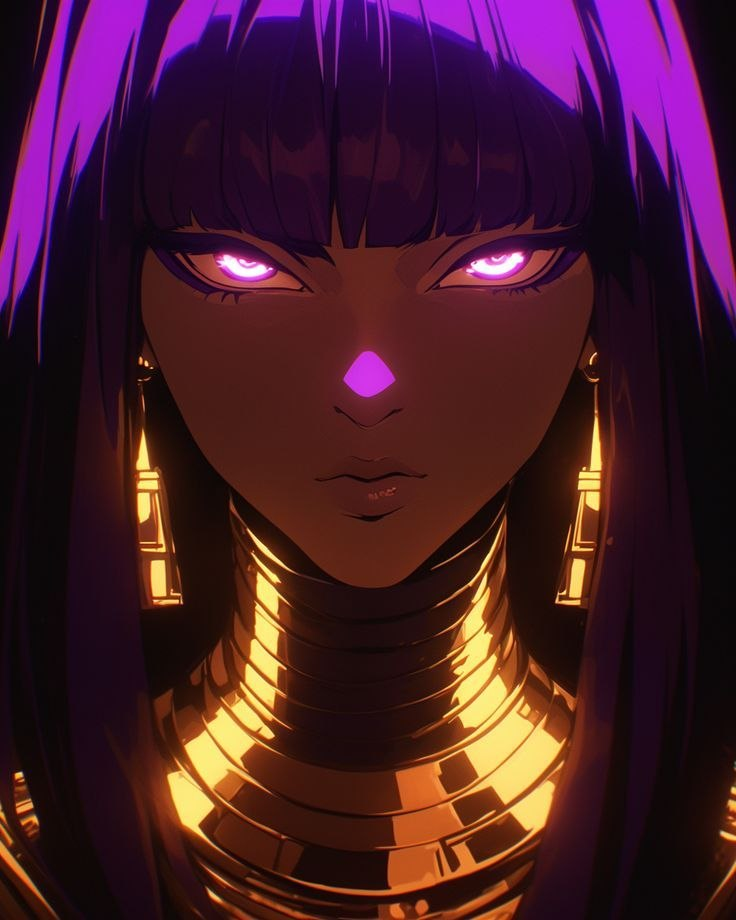

🏜️ Império Nefara
Sob o sol implacável, segredos antigos aguardam… e riquezas esquecidas chamam pelos ousados.

📜 Sobre o Império
No coração de um vasto deserto, Nefara é uma terra de pirâmides antigas, ruínas esquecidas e riquezas ocultas sob as dunas. O território é tão fascinante quanto mortal — repleto de armadilhas, criaturas desconhecidas e um calor implacável.
Para muitos, é um convite à fortuna.
Para outros, uma sentença de morte.
🏛️ Poder Ancestral
O Império Nefara é governado por uma imperatriz absoluta, cuja autoridade é incontestável. Ambiciosa e fascinada por tesouros antigos, ela mantém o controle por meio de governantes locais responsáveis por administrar cidades e garantir altos tributos à coroa. A economia do império gira em torno da exploração de ruínas, relíquias e riquezas ancestrais, frequentemente obtidas por aventureiros contratados pela própria imperatriz. Os impostos são rigorosos, e cidades que não cumprem suas obrigações rapidamente perdem proteção — o que, no deserto, pode significar destruição. A religião também exerce grande influência: Azgher, o deus do sol, é amplamente cultuado, com templos e rituais espalhados por todo o império.
📍 Locais Importantes
- • Kaz-Marnak — A capital do império. Cercada por oásis, é uma cidade luxuosa onde riqueza e poder se concentram. Suas construções religiosas e palácios refletem a devoção ao deus do sol.
- • Muralha de Osso — Uma cidade única, construída a partir dos restos de um antigo dragão colossal. Suas estruturas de ossos gigantes tornam o local tão impressionante quanto perturbador.
👥 Personagens Importantes

👑 Cleophara Nefara
Imperatriz de Nefara
Soberana absoluta do Império Nefara, Cleophara é uma figura tão fascinante quanto temida. Seu poder foi construído sobre riqueza, ambição e controle, em meio ao deserto implacável.
Cercada por luxo e relíquias antigas, ela financia expedições em busca de tesouros esquecidos, recompensando aqueles que a servem — e punindo severamente aqueles que falham.
Sua generosidade atrai… mas sua ira raramente permite uma segunda chance.